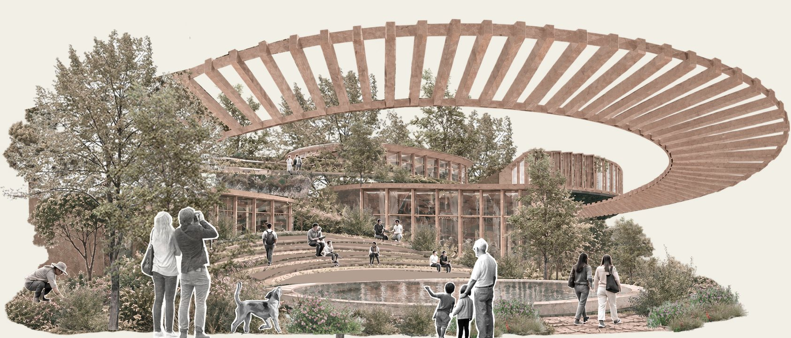
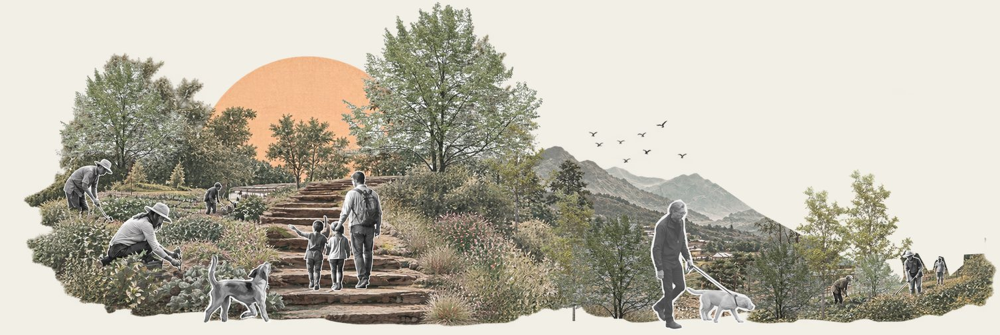
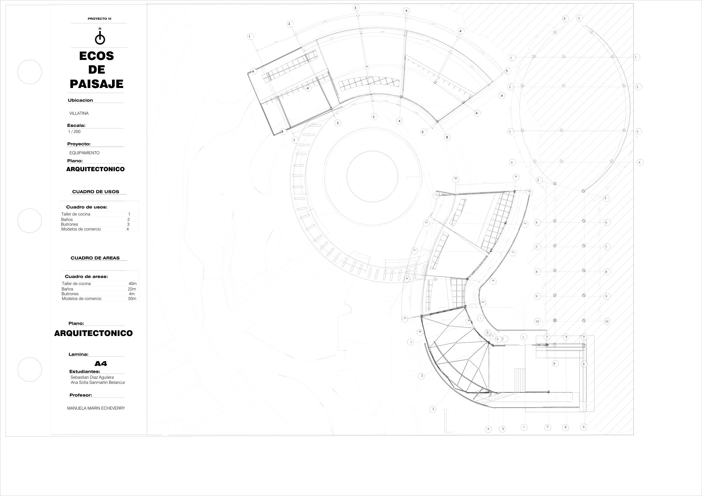
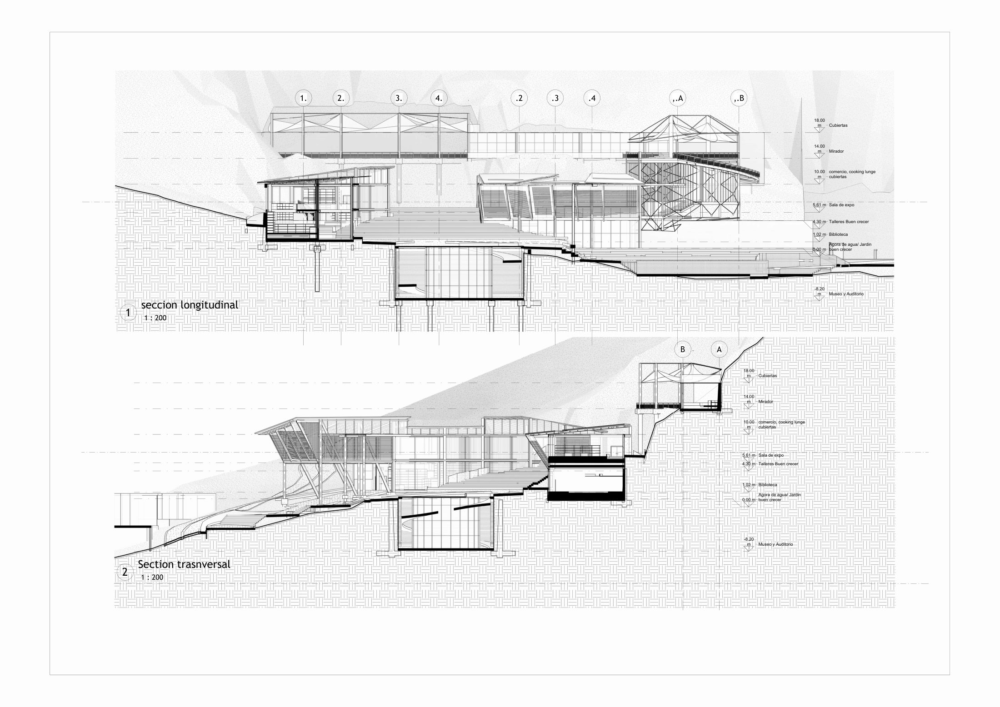

Volumetría 1
Biblioteca y sala de exposiciones
Módulo de consulta, sala de archivos, sala digital, administración, circulación y sala de exposiciones.
Proyecto VII · Universidad Santo Tomás, Medellín
Un equipamiento ambiental e intergeneracional en el borde de Villatina, donde las huertas, los patios y los senderos entran al edificio y lo vuelven parte de la ladera.

Análisis del lote
Empezamos el semestre caminando el borde oriental de Medellín. El lote está entre Villatina y Campo Santo, en el polígono SE-API-05, un Área para la Preservación de Infraestructuras y del Sistema Público y Colectivo en el corregimiento de Santa Elena.
Ahí se cruzan el Ecoparque Las Tinajas, el Cinturón Verde y el Jardín Circunvalar. Por eso no lo vimos como un terreno vacío, sino como una pieza que podía coser esos sistemas y, a la vez, frenar la expansión de asentamientos informales hacia las zonas de protección.
La norma del API permite equipamientos colectivos, espacio público de encuentro, infraestructura pública y áreas ambientales. Con eso claro, la pregunta fue cómo hacer un edificio que también fuera borde.

Usar el retiro como espacio de transición, recorrido, educación ambiental y permanencia.
Aprovechar la topografía y las visuales hacia el valle.
Conectar el Ecoparque Las Tinajas, Campo Santo y el borde verde en un solo sistema.
Análisis demográfico
Contamos manzana por manzana. Lo que encontramos fue una comunidad joven: muchos niños, jóvenes y adultos jóvenes.
Esa misma lectura deja ver hacia dónde va el barrio: dentro de unas décadas esa población va a envejecer en el mismo lugar. Así que el proyecto no podía pensarse solo para hoy. Propusimos un equipamiento que acompañe las distintas etapas de la vida, con espacios de encuentro, aprendizaje, bienestar y cuidado.
3.351 personas usarían el equipamiento
Proporción por sexo en las manzanas analizadas: 48 % mujeres, 51 % hombres.
Análisis climático
Estudiamos cómo se comporta el valle en la ladera: temperatura, confort, sol, viento y lluvia. De ahí salieron las estrategias pasivas que después definieron cubiertas, patios y orientación.

Ideas proyectuales
El paisaje como infraestructura social y espacial del proyecto.
Las huertas y las áreas verdes no quedan aisladas: se meten poco a poco en el equipamiento y generan patios, espacios de transición y lugares de permanencia donde arquitectura y paisaje se mezclan.
Queríamos un entorno donde envejecer estuviera acompañado por la naturaleza. La arquitectura se organiza alrededor de patios, jardines, huertas y recorridos contemplativos para que la gente pueda caminar, descansar, observar, cultivar y encontrarse en un mismo sistema.
Transmitir memoria
+ enseñar
+ disfrutar
+ envejecer activamente

Forma y programa
Con la idea definida, repartimos los usos en volúmenes que siguen la topografía. Cada color de la convención gráfica corresponde a un tipo de actividad, y así se lee en todas las plantas y secciones.
Volumetría 1
Módulo de consulta, sala de archivos, sala digital, administración, circulación y sala de exposiciones.
Volumetría 2
Jardín, zona de descanso, talleres de agricultura, carpintería y artes, conectados directamente con las huertas públicas.
Volumetrías 3 y 4
Módulos de comercio, restaurante, gradas hacia la cancha, termas, vivero y mirador.

Circulación y conexión
El edificio se piensa como una extensión del espacio público. Una red de patios, terrazas y circulaciones deja que el espacio público atraviese el proyecto.
La circulación abraza el conjunto, se adapta a la pendiente con rampas y escaleras, y conduce desde los tres accesos hacia el parque recreativo, las huertas urbanas, las zonas recreativas y el jardín.

Accesibilidad y actividadEncuentro, aprendizaje y culturaPaisaje y contemplación
Secciones, detalle y técnica
En la etapa final llevamos todo a secciones, detalles e isométricos. Las secciones muestran cómo los niveles siguen la topografía: espacio público abajo, huertas en la mitad, talleres más arriba y el mirador con comercio en la parte alta.
La cubierta curva en madera se volvió la imagen del proyecto. La desarrollamos con un isométrico explotado y detalles de uniones para explicar cómo se arma.


Entrega final · 70 × 100 cm